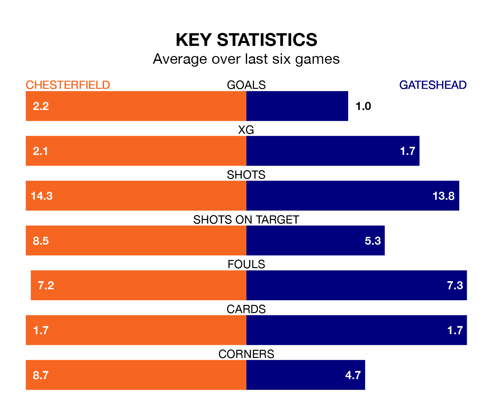

Wednesday's late match between Chesterfield and Gateshead promises to be one for the neutrals, as two of National League's most free-scoring sides go head-to-head.
Ahead of the game at the SMH Group Stadium, the Spireites and the Tynesiders sit top and third in the goal-scoring charts, with 61 and 50 goals respectively.
Striker Will Grigg leads the way for the home side, having bagged 13 goals in their 25 games to date.
And Marcus Dinanga Nyamabu has been the main man in the opponents' penalty box for Gateshead, with 12 goals.
Chesterfield are top of the table after 25 games, of which they have won 20 and drawn two, earning 62 points.
Gateshead are eight places behind the Spireites in ninth, with 11 wins and seven draws putting them on 40 points.
The hosts are in fantastic form in National League, with five wins and one loss from their last six games.
With two wins and two draws over that period, the Tynesiders's form is much worse – they have taken eight points from 18, compared to Chesterfield's 15.
In Archie Mair, the away side can rely on one of the league's safest pair of hands. He has kept seven clean sheets in his 25 appearances this season in National League.
In Chesterfield's net, Harry Tyrer has five clean sheets in 23 games. He has conceded a goal every 80 minutes, 10% more often than the 87 minutes between goals for Mair.
Over the last two years, Chesterfield and Gateshead have played each other twice. Chesterfield won both of them.
Their last meeting was on March 4, when Chesterfield won 2-1 away.
Chesterfield's last match was on January 1, a 3-2 win against Solihull Moors, with Grigg, Ryan Paul Colclough and Tom Naylor getting the goals for the Spireites.
Gateshead lost 2-0 against York City last time out, also on January 1.
Updated: 15:34, 08/01/24